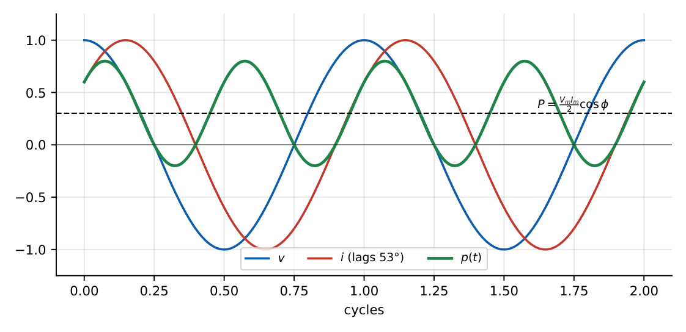
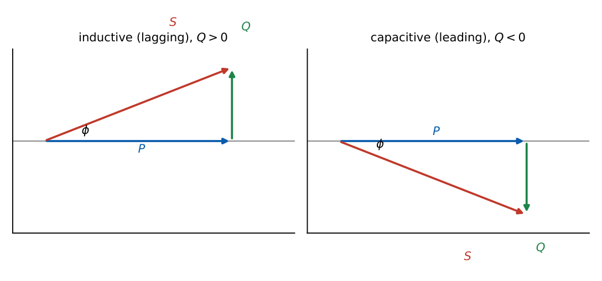
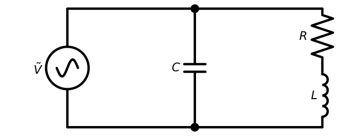
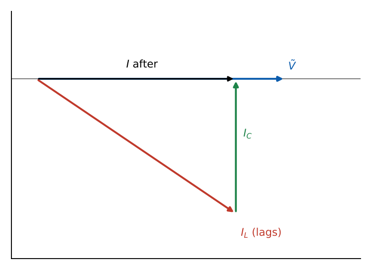
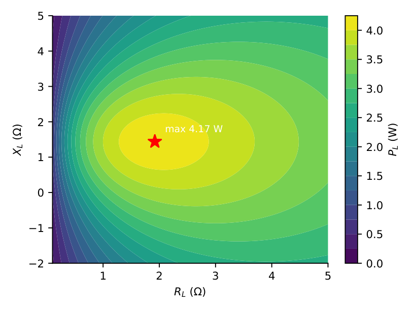

AC Power and Maximum Power Transfer
In this chapter
Complex power \(S=P+jQ\), power-factor correction (find \(C\)), power-triangle manipulations with several loads, and conjugate matching for maximum power. RMS versus peak is the most common source of lost marks.
8.1 Instantaneous power
For \(v=V_m\cos(\omega t+\theta_v)\) and \(i=I_m\cos(\omega t+\theta_i)\) with \(\phi=\theta_v-\theta_i\) (the impedance angle): \[p(t)=vi=\frac{V_mI_m}{2}\cos\phi+\frac{V_mI_m}{2}\cos(2\omega t+\theta_v+\theta_i).\] The first term is constant; the second oscillates at twice the supply frequency. Expanding the cosine of the difference, \[p(t)=P\left[1+\cos(2\omega t+2\theta_v)\right]+Q\sin(2\omega t+2\theta_v)\] with \(P=\tfrac12V_mI_m\cos\phi\) and \(Q=\tfrac12V_mI_m\sin\phi\). The \(P\) term never reverses; the \(Q\) term has zero average and represents energy sloshing between source and reactive elements.

8.2 Average power
\(P=\dfrac{V_mI_m}2\cos\phi=V_{rms}I_{rms}\cos\phi=I_{rms}^2R=\dfrac{V_R^2}{R}\) (watts).
For a purely resistive load \(P=V_{rms}I_{rms}\); for a purely reactive load \(P=0\).
8.3 Reactive power
\(Q=V_{rms}I_{rms}\sin\phi=I_{rms}^2X\) (volt-amperes reactive, var). \(Q>0\) for inductive load (current lags), \(Q<0\) for capacitive load (current leads). Sign convention: an inductor absorbs \(+Q\) and a capacitor delivers reactive power (\(-Q\) absorbed).
8.4 Apparent power
\(S=V_{rms}I_{rms}\) (VA). Ratings of transformers and cables are in VA because the current they must carry depends on \(S\), not \(P\).
8.5 Complex power
\(\mathbf S=\tilde V_{rms}\tilde I_{rms}^{\,*}=P+jQ\), \(|\mathbf S|=V_{rms}I_{rms}\), \(\mathbf S=I_{rms}^2Z=\dfrac{|V_{rms}|^2}{Z^*}\).
With peak phasors: \(\mathbf S=\tfrac12\tilde V\tilde I^*\).

\(Z=6+j8\ \Omega\), \(\tilde V=100\angle0^\circ\) V (rms). \(\tilde I=100/(10\angle53.13^\circ)=10\angle-53.13^\circ\) A. \(\mathbf S=100\times10\angle+53.13^\circ=600+j800\) VA: \(P=600\) W, \(Q=800\) var (inductive), \(S=1000\) VA, pf \(=0.6\) lagging. Check: \(I^2R=100\times6=600\), \(I^2X=100\times8=800\). ✓
8.6 Power factor
\(\text{pf}=\cos\phi=P/S\). It is lagging for an inductive load (current lags voltage) and leading for a capacitive load. The pf alone does not tell you the sign of \(Q\): always state lag/lead.
8.7 Power-factor correction
Industrial loads are inductive; a low pf means large current for the same real power (higher \(I^2R\) loss in the line). Connect a shunt capacitor across the load: it supplies part of the load’s reactive power, leaving the real power unchanged.
\(Q_C=P(\tan\phi_1-\tan\phi_2)\), \(C=\dfrac{Q_C}{\omega V_{rms}^2}\) (\(\phi_1\): old angle, \(\phi_2\): new angle).
\(1\) kW load, pf \(0.8\) lagging, \(230\) V, \(50\) Hz.
\(Q_1=P\tan\phi_1=1000\times0.75=750\) var. To reach unity, \(Q_C=750\) var: \(C=\dfrac{750}{2\pi\cdot50\cdot230^2}=45.1\ \mu\)F.
Line current falls from \(1000/(230\times0.8)=5.43\) A to \(1000/230=4.35\) A (\(20\%\) less; line loss \(36\%\) less).
\(\tan\phi_2=\tan(\cos^{-1}0.95)=0.3287\); \(Q_C=1000(0.75-0.3287)=421.3\) var; \(C=25.4\ \mu\)F.


The capacitor must be connected in parallel (shunt) with the load so that the load voltage and real power do not change. Series compensation changes the load voltage. Over-correction gives a leading pf, and also a large current.
8.8 Complex power relationships
Conservation: for any network \(\sum\mathbf S_{delivered}=\sum\mathbf S_{absorbed}\). So \(\sum P\) and \(\sum Q\) are each conserved, but \(\sum|\mathbf S|\ne|\sum\mathbf S|\).
Load 1: \(10\) kW, pf \(0.8\) lag \(\to\mathbf S_1=10+j7.5\) kVA. Load 2: \(5\) kW, pf \(0.6\) lead \(\to\mathbf S_2=5-j6.67\) kVA.
\(\mathbf S=15+j0.833\) kVA, \(|\mathbf S|=15.02\) kVA, pf \(=15/15.02=0.9985\) lag. (Adding the magnitudes \(12.5+8.33=20.8\) would be wrong.)
8.9 Maximum power transfer in AC circuits
For a source \(\tilde V_{Th}\) with \(Z_{Th}=R_{Th}+jX_{Th}\) and load \(Z_L=R_L+jX_L\), the load power (peak phasors) is \[P_L=\frac{\tfrac12|\tilde V_{Th}|^2R_L}{(R_{Th}+R_L)^2+(X_{Th}+X_L)^2}.\]
- \(X_L\) and \(R_L\) both adjustable: \(Z_L=Z_{Th}^*\) (conjugate matching); \(P_{max}=\dfrac{|\tilde V_{Th}|^2}{8R_{Th}}\) (peak) \(=\dfrac{|V_{Th,rms}|^2}{4R_{Th}}\).
- Only \(R_L\) adjustable (\(X_L\) fixed): \(R_L=\sqrt{R_{Th}^2+(X_{Th}+X_L)^2}\).
- Only \(R_L\) adjustable and load purely resistive: \(R_L=|Z_{Th}|\).
- Load \(|Z_L|\) adjustable with fixed angle \(\theta_L\): maximum when \(|Z_L|=|Z_{Th}|\).

Using the Thevenin equivalent of Chapter 7: \(\tilde V_{Th}=8\angle-36.87^\circ\) V (peak), \(Z_{Th}=1.92-j1.44\ \Omega\).
Conjugate matching: \(Z_L=1.92+j1.44\ \Omega\); \(P_{max}=\dfrac{8^2}{8\times1.92}=4.17\) W.
If the load must be a pure resistor: \(R_L=|Z_{Th}|=2.4\ \Omega\), \(|\tilde I|=\dfrac8{|4.32-j1.44|}=1.757\) A, \(P=\tfrac12(1.757)^2(2.4)=3.70\) W.
Peak versus RMS: with peak phasors \(P_{max}=|V_{Th}|^2/8R_{Th}\); with RMS phasors \(P_{max}=|V_{Th}|^2/4R_{Th}\). Also, maximum power transfer occurs at \(50\%\) efficiency, so it is not used for power lines, only for signal sources (antennas, amplifiers).
8.10 Power calculations in RLC circuits
- Real power is dissipated only in resistors: \(P=\sum I_k^2R_k\).
- Reactive powers add algebraically: \(Q=\sum I_k^2X_k\) (inductive \(+\), capacitive \(-\)).
- At series resonance \(Q=0\) and pf \(=1\); the source supplies only \(P=V_s^2/R\).
Q1. A load draws \(I=10\angle-30^\circ\) A (rms) from \(V=200\angle0^\circ\) V (rms). Its power factor is (A) \(0.5\) leading (B) \(0.866\) lagging (C) \(0.866\) leading (D) \(0.5\) lagging.
Q2. For maximum power transfer from a source \(Z_{Th}=3+j4\ \Omega\) to a variable complex load, the load must be (A) \(3-j4\ \Omega\) (B) \(3+j4\ \Omega\) (C) \(5\ \Omega\) (D) \(4\ \Omega\).
Q3. Which quantity is conserved in an AC network? (A) \(\sum|S|\) (B) \(\sum P\) and \(\sum Q\) (C) \(\sum S\) magnitude only (D) none.
Answers: Q1 (B): current lags. Q2 (A). Q3 (B).
Q4. A \(2\) kW load at pf \(0.6\) lagging is corrected to pf \(0.8\) lagging by a shunt capacitor. The reactive power supplied by the capacitor is (A) \(0.667\) kvar (B) \(1.167\) kvar (C) \(1.5\) kvar (D) \(2.5\) kvar.
Q5. \(\tilde V_{Th}=20\angle0^\circ\) V (rms), \(Z_{Th}=5+j5\ \Omega\). With conjugate matching the maximum power is (A) \(20\) W (B) \(10\) W (C) \(5\) W (D) \(80\) W.
Answers: Q4 (B): \(\tan\phi_1=1.333\), \(\tan\phi_2=0.75\), \(Q_C=2(1.333-0.75)=1.167\) kvar. Q5 (A): \(|V|^2/4R=400/20=20\) W (rms).
Q6. A \(230\) V (rms), \(50\) Hz supply feeds a \(1\) kW load of pf \(0.8\) lagging. The capacitor needed to raise the pf to unity is \(\mu\)F (nearest integer).
Q7. \(Z=3+j4\ \Omega\) carries \(5\) A (rms). The complex power \(P+jQ\) in VA has \(Q=\) var.
Answers: Q6: \(750/(2\pi\cdot50\cdot230^2)=45.1\ \mu\)F \(\to45\). Q7: \(Q=I^2X=25\times4=100\) var (\(P=75\) W).
Q8. A shunt capacitor is connected across an inductive load. Which are true? (A) Real power drawn from the source is unchanged. (B) Line current magnitude decreases (up to unity pf). (C) Load voltage changes significantly. (D) The source supplies less reactive power.
Answers: Q8: (A), (B), (D).
(i) Using \(\tfrac12V_mI_m\) when the data are RMS, or vice versa. (ii) Adding \(|S|\) of different loads. (iii) Forgetting lag/lead when converting pf to \(\tan\phi\). (iv) Mixing \(8R_{Th}\) and \(4R_{Th}\) in \(P_{max}\). (v) Using \(Z_L=Z_{Th}\) instead of \(Z_{Th}^*\).
T1. A load has \(S=5+j5\) kVA. Find pf and state lag/lead.
T2. A source has \(Z_{Th}=10-j5\ \Omega\). Find the load for max power.
Answers: T1: \(S=7.07\) kVA, pf \(=0.707\) lagging. T2: \(Z_L=10+j5\ \Omega\).
- \(P=VI\cos\phi\), \(Q=VI\sin\phi\), \(S=VI\) (rms); \(\mathbf S=\tilde V\tilde I^*=P+jQ\); \(S^2=P^2+Q^2\); pf \(=P/S\).
- Peak phasors: \(\mathbf S=\tfrac12\tilde V\tilde I^*\). \(p(t)\) has frequency \(2\omega\).
- Lagging: inductive, \(Q>0\). Leading: capacitive, \(Q<0\).
- Correction: \(Q_C=P(\tan\phi_1-\tan\phi_2)\), \(C=Q_C/\omega V^2\) (shunt).
- \(\sum P\), \(\sum Q\) conserved, \(\sum|S|\) not.
- Max power: \(Z_L=Z_{Th}^*\); \(P=|V_{Th}|^2/8R_{Th}\) (peak) or \(/4R_{Th}\) (rms). \(R_L\) only: \(R_L=|Z_{Th}|\).